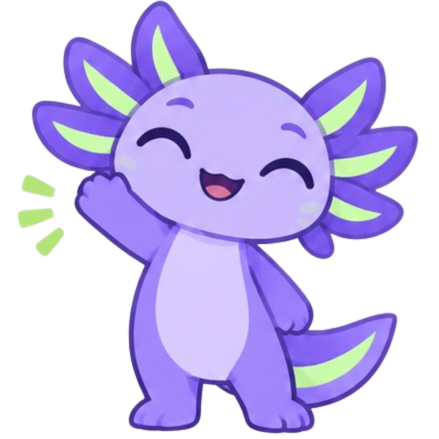
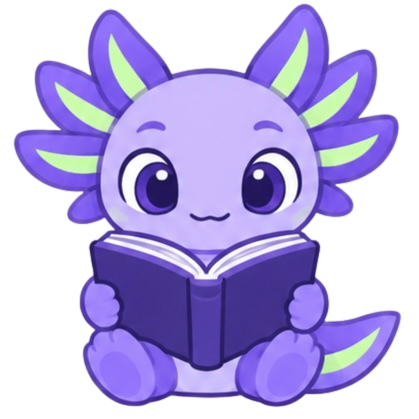
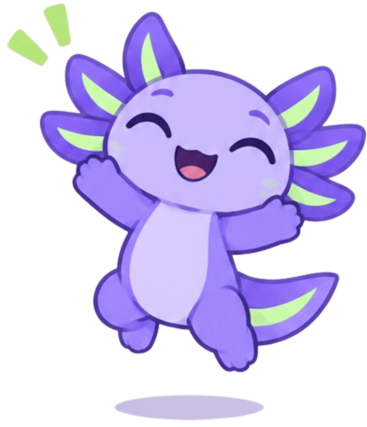

Schön, dass du da bist!
Bereit für eine neue Runde?
Ein paar Wörter. Ein bisschen Fortschritt. Jeden Tag.

Dein Fortschritt
0 WörterGelernte Schulvokabeln insgesamt
Was möchtest du üben?
🌍 Allgemein üben
Wortschatz nach Sprache und Niveau.
📚 Nach Unit üben
Deine Schulvokabeln aus dem Buch.
📈 All-Time Stats
Deine langfristige Entwicklung.
Allgemein üben
Wähle deine Sprache und dein Niveau.
Nach Unit üben
Schulvokabeln. Aktuell ist Englisch verfügbar.
1 / 10
Übersetze das Wort
word

Lesson geschafft!

🎉
0 / 0 richtig
Richtig0
Falsch0
XP verdient0
All-Time Stats
Nur deine Schulvokabeln zählen in diese Statistiken.
Deine aktuelle Schulnote
–
Trefferquote gesamt
–
📚 Alle Schulvokabeln
🇬🇧 Englische Schulvokabeln
🇫🇷 Französische Schulvokabeln
🏆 Weitere Statistiken
Die Trefferquote berechnet sich aus allen beantworteten Schulvokabel-Fragen. Allgemeine Übungen werden nicht mitgezählt. Die Note folgt deinem angegebenen Notenschlüssel.